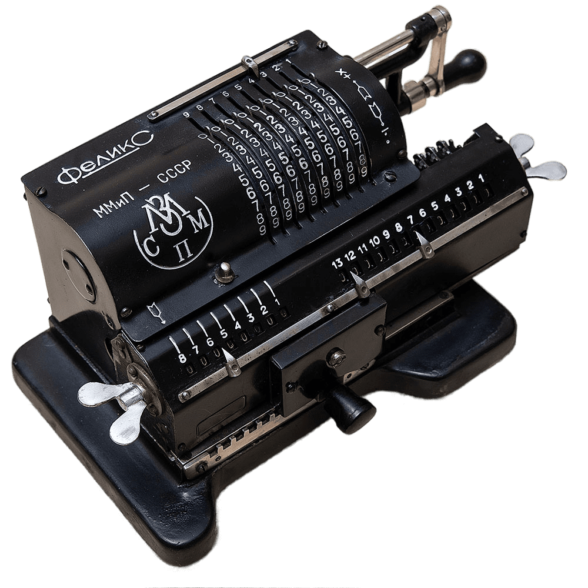

Этап
Основателями кафедры стали профессора С.О. Доброгурский, Н.И. Пчельников, а также главные конструкторы приборостроительных заводов К.Н.Богданов и С.Н.Калашников. При возникновении факультета «Приборостроение» на нем была одна единственная кафедра — кафедра «Точного приборостроения». По мере расширения объема изучаемых дисциплин из этой кафедры вырастали другие кафедры, занимавшиеся изучением того или иного класса приборов. В их числе была создана кафедра «Счетно-решающие приборы и устройства». Создание кафедры было обусловлено потребностью промышленности в специалистах в области разработки и проектирования счетно-решающих приборов для различных отраслей приборостроения, особенно новых направлений. Кафедра стала одной из первых в стране, начавших выпуск инженеров этого профиля
Феликс

«Феликс» — самый распространённый в СССР арифмометр. На нем производили рассчеты на кафедре. Выпускался, с учётом многочисленных модификаций, с 1929 по 1978 год на заводах счётных машин в Курске (Счётмаш), в Пензе (Пензенский завод вычислительной техники) и в Москве (Завод счётно-аналитических машин имени В. Д. Калмыкова (САМ)).
Эта счётная машина является модификацией рычажного арифмометра Однера. Она позволяет работать с операндами длиной до 9 знаков и получать ответ длиной до 13 знаков (до 8 для частного от деления).
Устройство машины оптимизировано для минимальной цены, в результате арифмометр в 1970-е годы стоил порядка 13 рублей, но качество изготовления оставляло желать лучшего. С другой стороны, в арифмометре использован очень простой и в то же время надёжный транспортный механизм каретки, отличавший его от всех западных аналогов.